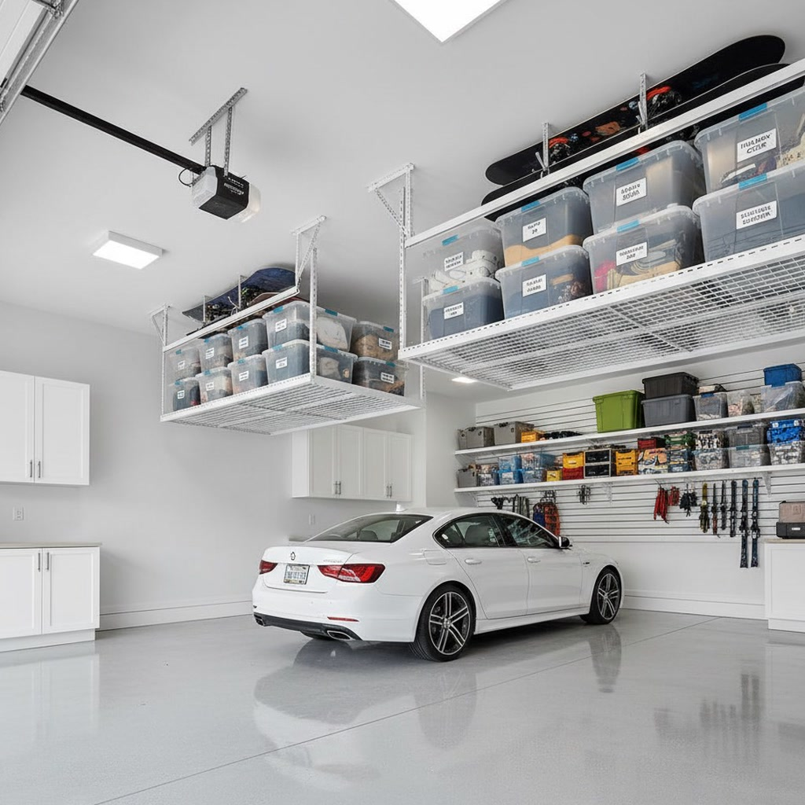
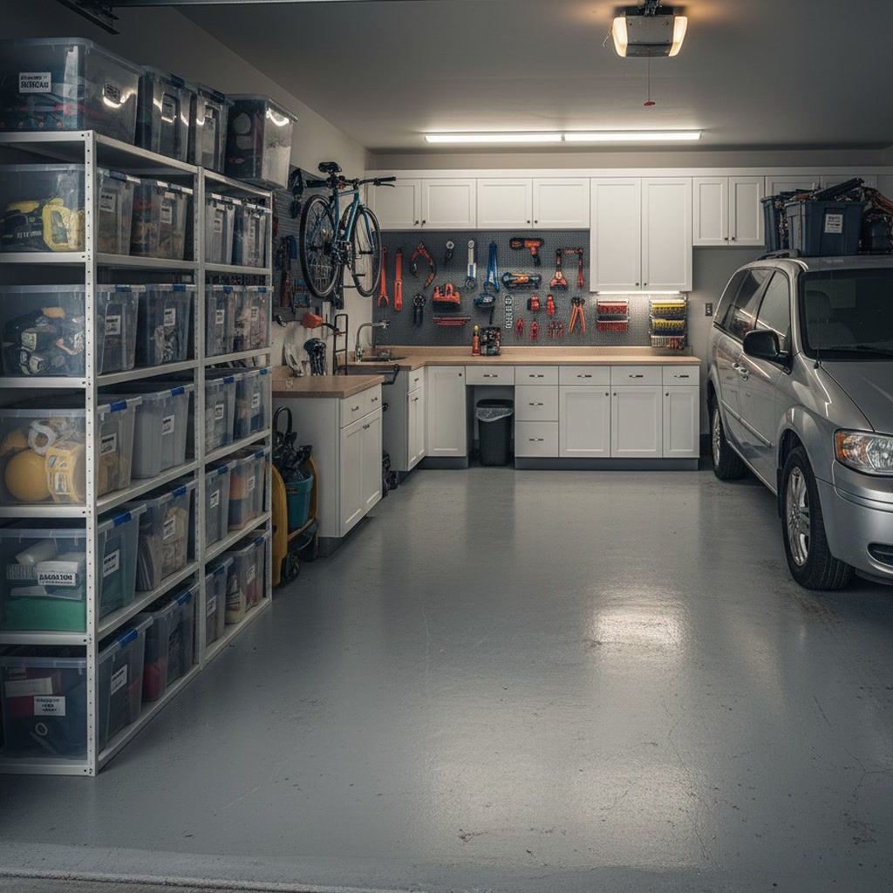

A wall track system runs $450 to $800 installed for a single wall, the range listed on our garage storage solutions page. For a fixed price, text three photos to (587) 804-9266 or email info@garagescape.ca: the whole wall, the bottom of the wall where it meets the floor, and the things you want off the floor.
Retailers sell wall systems by the panel and the hook. This page covers what they leave out: which system suits which load, what a Calgary garage wall is built from, how high each thing should hang when the floor is wet from November to April, and what an installed wall costs.
Slatwall, Track or Pegboard: Which Garage Wall System
Three systems cover almost every garage wall. They differ in how they grip the wall and how the maker states the load, so the numbers below can't be compared straight across. All four ratings come from the makers' own listings and installation sheets.
| System | Published rating | Suits | The condition attached |
|---|---|---|---|
| PVC slatwall panels (Trusscore, Proslat) | 75 lb per square foot | A full wall of mixed gear: garden tools, sports bags, baskets, small shelves | Trusscore's guide gives that rating only when panels are fastened to studs or masonry every 16 inches |
| Gladiator GearWall panels | 50 lb per square foot | The same jobs, with Gladiator's own hooks and cabinets | A lower rating than PVC slatwall, so heavy single items go on a rail |
| Gladiator GearTrack channels | 75 lb per linear foot in the Lowe's installation sheet | One or two rows for long tools, hoses and ladders | Some retail listings say 100 lb. We plan to the lower figure |
| Rubbermaid FastTrack steel rail | 1,750 lb per 48 inch rail | Heavy single items: bikes, wheelbarrows, a loaded shelf | The rail has to hit four studs, which the Home Depot installation sheet says is not possible at 24 inch spacing |
| Steel pegboard | About 10 to 25 lb per hook | Hand tools over a workbench | Light items only. Nothing with a long handle or a motor |
Slatwall wins when the wall has to change. A hook lifts out and moves to another groove with no new holes, which matters in a house where the gear changes every couple of years. Track costs less per foot and carries heavy single items well, but it gives you one or two rows where slatwall gives you the full height. Pegboard is still the cheapest way to see every hand tool at once.

Most garages we plan end up with two systems: slatwall or track along the long wall for gear, and pegboard over the bench. Closed storage for paint and chemicals is a separate job, covered on our garage cabinets page.
What Is Behind Your Garage Wall
A wall system is only as strong as the wood its screws reach. Four things behind the drywall change the plan.
Stud spacing: 16 inches or 24
Slatwall and rail ratings assume a stud every 16 inches. Trusscore's installation guide says to add blocking where studs are further apart, and Rubbermaid's sheet says a 48 inch rail reaches full capacity only on four studs. Some detached garages are framed at 24 inches, and a rail there catches three studs at best. We measure the spacing on every wall before choosing a system. Where it is wide, we either add blocking, use a panel that spans it, or lower the load we plan for.
The wall you share with the house
In an attached garage, the wall and ceiling next to the house carry an air barrier. The National Building Code's intent statement for that barrier is to limit carbon monoxide leaking from the garage into living space, and Alberta's edition of the code requires the barrier to stay continuous around anything that passes through the wall. So on that wall we screw through the drywall into studs and leave it at that. We don't cut openings in it or recess anything into it.
The concrete at the bottom
Many attached garages have a concrete curb at the base of the wall, with the wood framing sitting on top of it. The height varies by builder. Panels and rails start above the curb, so the first photo we ask for is the bottom of the wall. A tall curb is useful: it is the part of the wall that meltwater and road salt can soak without damage.
Wires, pipes and open studs
Outlets, switches, a hose bib line, the gas line to a garage heater and a central vacuum port all sit in garage walls. We map them before drilling and cut panels around boxes instead of covering them. An unfinished detached garage with open studs is the easy case. We can see every wire, add blocking wherever a heavy hook will go, and fasten panels straight to the framing.
How High Each Thing Should Hang
From November to April a Calgary garage floor is wet. Cars bring in snow packed with road salt and gravel, it melts across the slab, and it splashes the bottom of the wall when you pull in. That sets the height of everything.
| Zone | What goes there | Why |
|---|---|---|
| Floor to about knee height | Nothing that rusts or soaks. A boot tray, a floor squeegee, plastic bins on a raised shelf | This is the splash zone for salt water all winter |
| Knee to shoulder | What you grab weekly: shovels and ice scrapers in winter, the trimmer and kids' bikes in summer | No reaching, no ladder, and heavy things lift off at waist height |
| Shoulder to full reach | Lighter seasonal gear: helmets, ball bags, camp chairs, extension cords, hoses | Easy to see, light enough to lift down with one hand |
| Above reach | A shelf of lidded totes, or adult bikes hung by the front wheel | Used a few times a year. Anything heavier belongs on an overhead rack or the floor |

The other measurement is depth. A hook that sticks out 12 inches is fine on the back wall and a problem beside the driver's door. We park your vehicle where it normally sits, open its doors, and mark the wall before a panel goes up. On a tight side wall that often means flat items only: ladders, folding chairs, long-handled tools hung in line with the wall.
What Can Hang on a Wall and What Can't
Hooks fail at the hook long before the panel fails, so we match each item to hardware made for it and keep the heaviest things on their own brackets lagged into studs.


The wall takes the long and awkward thingsExample images, not a client's garage. The shovels, the bike and the hand tools moved to the walls. The boxes became labelled totes on shelving, because a wall hook is the wrong place for a 40 pound bin.
| Item | On the wall? | How |
|---|---|---|
| Shovels, rakes, brooms, hockey sticks | Yes | Slatwall or track with tool hooks, heads up, handles clear of the splash zone |
| Bikes | Yes | Vertical hooks by the front wheel, staggered high and low so handlebars don't clash |
| E-bikes | Sometimes | Many weigh 50 pounds or more. They get a rail or bracket on studs at a height you can roll them onto, never a lift over your head |
| Ladders, folding chairs, sleds | Yes | Hung flat on two hooks, on the wall beside the car |
| Winter or summer tires on rims | Yes, on their own rack | A sedan set weighs roughly 160 to 200 pounds. That goes on a wall-mounted tire rack lagged into studs, never on slatwall hooks |
| Full totes, bags of salt, paint | No | Dense weight goes on steel shelving or in cabinets. Our custom shelving page covers both |
| Snowblower, mower, pressure washer | No | They stay on the floor in a marked bay, with wall hooks above for cords and attachments |
A quick check before you load a rail: add up what will hang on one four-foot section. At 75 pounds per linear foot, a four-foot GearTrack channel is rated for 300 pounds. Two adult bikes, a wheelbarrow and a ladder come to well under that. Add a set of tires on rims and the total passes it.
Wall Storage in a Cold Garage
An unheated detached garage sits below freezing for weeks, then a chinook lifts it above zero in an afternoon. Wall systems cope with that if they are chosen and installed for it.
- PVC panels need room to move. Trusscore's guide says to leave the panels in the garage for 24 hours before installing, keep a quarter-inch gap at the panel ends, and stop short of fully tightening the screws so the panels can slide as they expand and contract. A panel fastened tight in the cold has nowhere to go when it warms up.
- Hardboard and MDF soak up damp air. Brown hardboard pegboard and the MDF slatwall used in retail stores swell and sag in a garage. We use steel or plastic pegboard and PVC or steel wall systems.
- Screws should resist salt. Trusscore specifies corrosion-resistant screws. In a garage where salt water evaporates off the floor all winter, plain drywall screws rust at the head.
- Hooks move with the season. In October the shovels, scrapers and the bag of ice melt go by the door and the bikes go up high. In April they swap. On slatwall that takes ten minutes and no tools.
Garage Wall Storage in Airdrie, Chestermere, Okotoks and Cochrane
We install wall systems outside city limits on the same terms. The garages differ, so the walls do too.
- Airdrie garage wall storage. Most are new-build attached doubles where two vehicles leave the perimeter as the only storage. The plan on our Airdrie garage organization page is full-height wall storage around the edge and an empty floor in the middle.
- Chestermere garage wall storage. Triple garages with lake gear. Wakeboards and skis go on a vertical wall rack and life jackets in bins at grabbing height, as the Chestermere page sets out.
- Okotoks garage wall storage. Start with garage decluttering in Okotoks. A wall system put up before the sort ends up holding things you would have given away.
- Cochrane garage wall storage. Tighter garages where every wall counts: slatwall for bikes and yard tools and a shallow run that clears the mirror, as described on the Cochrane garage organization page.
Garage Wall Storage Cost
The $450 to $800 installed range covers a wall track system on a single wall. If you are pricing materials yourself, slatwall panels run $60 to $150 per 4x8 panel and a steel pegboard panel $40 to $120 at Calgary retailers. Five things move an installed quote:
- Wall length and height. A band of slatwall four feet tall costs less than floor-to-ceiling coverage and holds most of what a family hangs.
- Stud spacing. Walls framed at 24 inches need blocking or a different panel.
- Cut-outs. Every outlet, switch and pipe is a cut in a panel.
- Hooks and baskets. Accessories add up faster than panels. We list them item by item in the quote so you can trim.
- Clearing first. Organization starts around $299. If the wall is buried, that work comes before the install. Our Calgary garage organization page covers the full scope.
Hanging a kit yourself saves the labour. What you pay us for is finding the framing, choosing a system the wall can carry, setting heights around your vehicle and the wet floor, and loading it so no hook holds more than it should. The shelving solutions guide compares wall track with freestanding shelving and ceiling racks if you are still choosing.
How the Installation Goes
- Photos and a fixed price. Send the wall, the base of the wall and the gear. We reply with a layout and a quote.
- Find the framing. On site we locate every stud, measure the spacing, and mark wires, pipes and the top of the concrete curb.
- Mark the heights. With your vehicle parked and its doors open, we mark where panels start and how far hooks can stick out.
- Fasten to studs. Panels and rails are screwed into framing with corrosion-resistant screws, never into drywall alone.
- Hang it with you. We load the wall together, heaviest items lowest, and leave spare hooks for the next season's swap.
A single wall takes about two to three hours. Text photos to (587) 804-9266 to get a date.